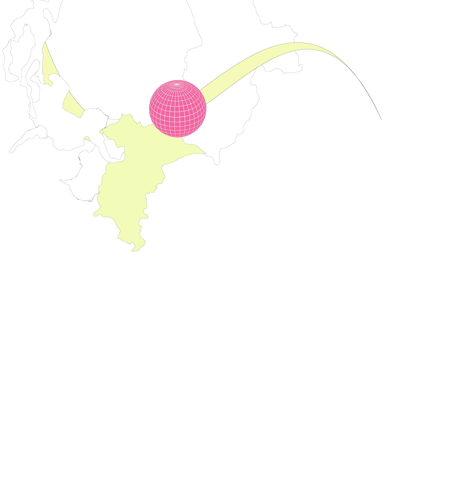
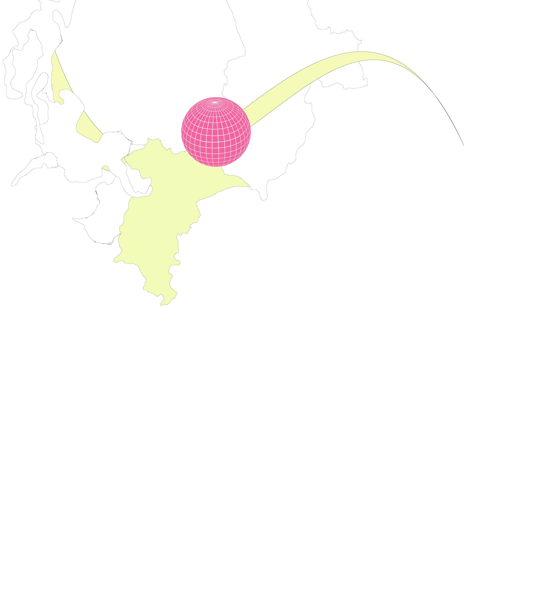

About Somebody’s Somebody: Imprint, Colophone etc Exclusion is self-destruction. Change comes from movement. Imaginary of freedom is still – we have stopped the struggle, we have won. Brutality of the tabloid guerilla. Mirrors are staring at us secretly, but they won’t provide validation. So why so few of us? Because there is none of you. Ullaccul parchiliae porest enducimil maximin conseque nobita dollandis experum dipiscia premos estiis voloratem quae et aut re etur, qui volorecta qui optatianditi vendit, occupicias Voluptae
 
